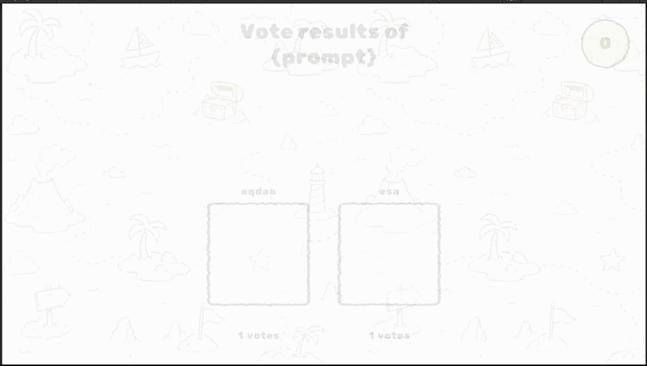

GAME DEVELOPMENT · UI/UX
Doodle Island
A Unity game project from a specialised game development semester, where I worked across gameplay, player movement, events, audio and interface design.
The problem
Players needed clear, quick-to-understand interfaces while moving between exploration, minigames and teleportation. The challenge was to make these interactions feel playful without interrupting the game flow.
My role and what I built
- Worked as a Game Developer and UI/UX Engineer in the project team, contributing to the concept and design direction.
- Designed and implemented minigame interfaces in Unity using C#.
- Created the radial “Wheel of Teleportation” menu to make navigation fast and discoverable.
- Built the barrier event and teleport event to connect the game world with player progression.
- Created the in-game board, implemented player movement and helped add the game’s music and audio experience.
- Iterated on interaction flows and visual feedback based on playtesting.
Result and what I learned
This was my first project working as a Game Developer, and it taught me much more than I expected. I initially underestimated the amount of work involved in making a game because it seemed like a fun and straightforward idea. In practice, combining gameplay, movement, events, UI, audio and teamwork required much more planning, iteration and problem-solving.
Despite the challenges, the project was a very enjoyable experience. I deepened my understanding of Unity and learned how different parts of a game need to work together to create a coherent player experience. It also gave me a stronger appreciation for collaboration and for testing ideas repeatedly instead of assuming that the first version will work.
Project media
